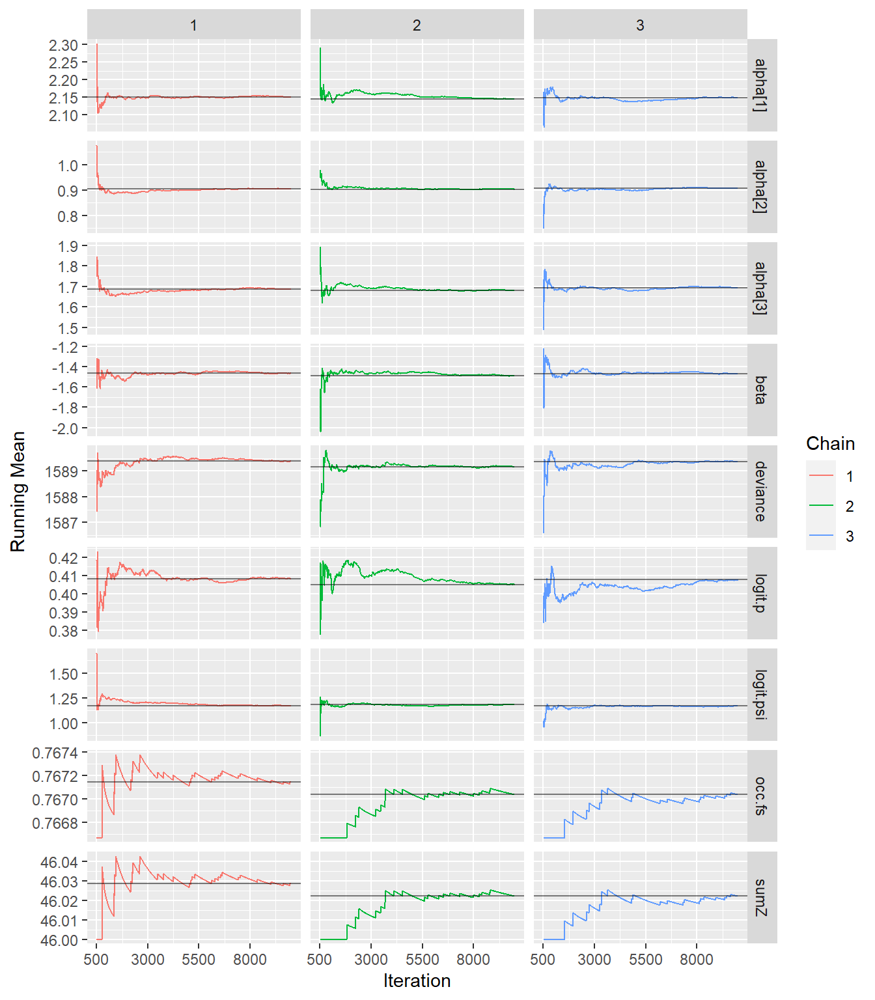
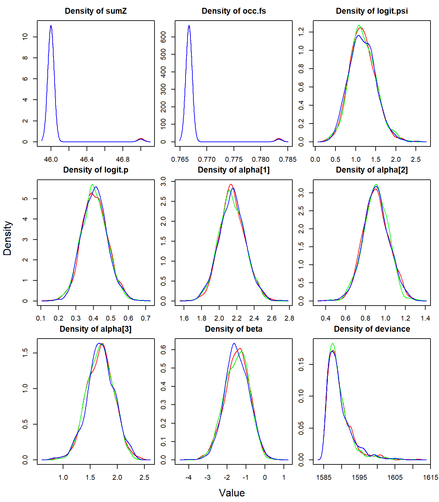
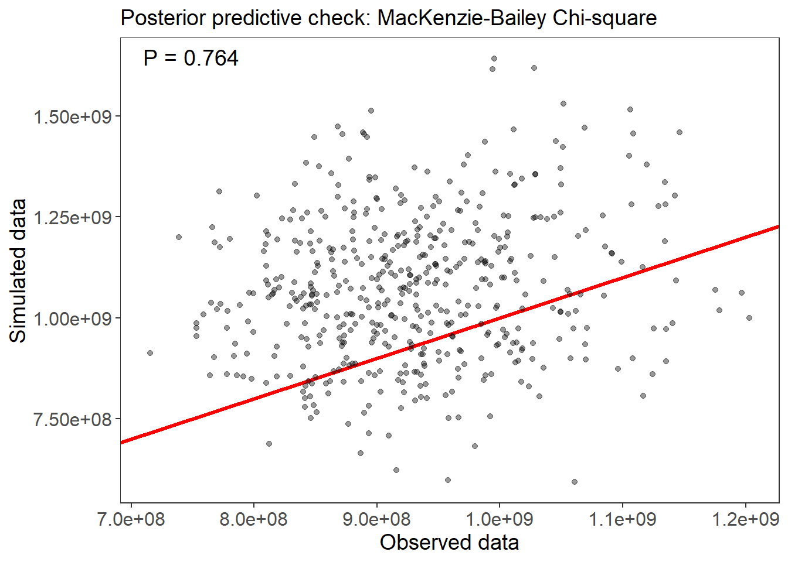
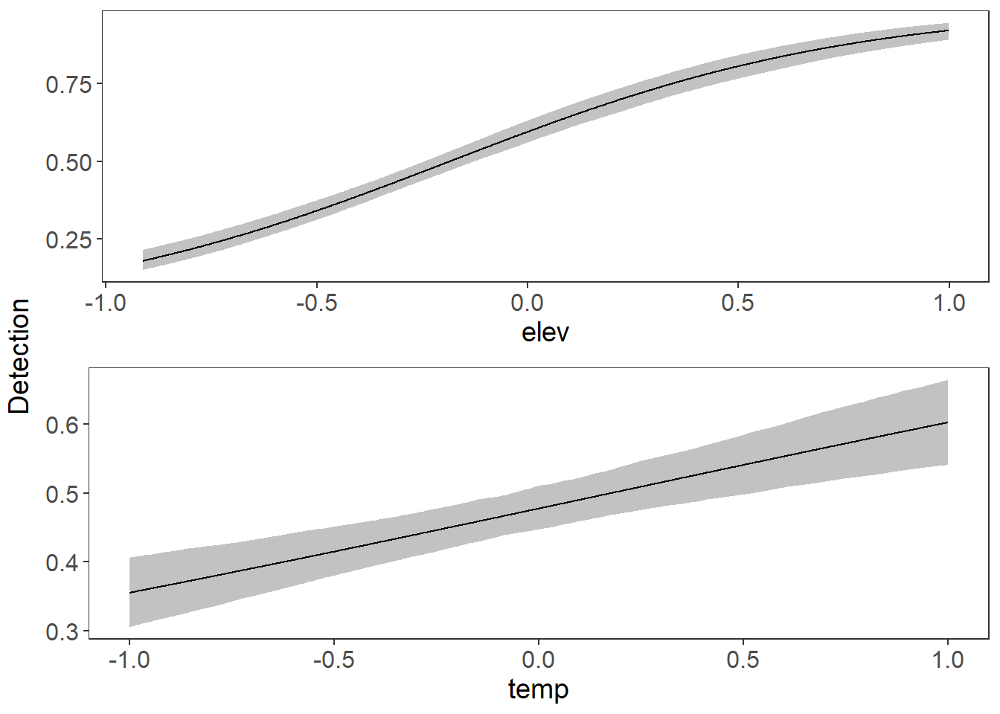
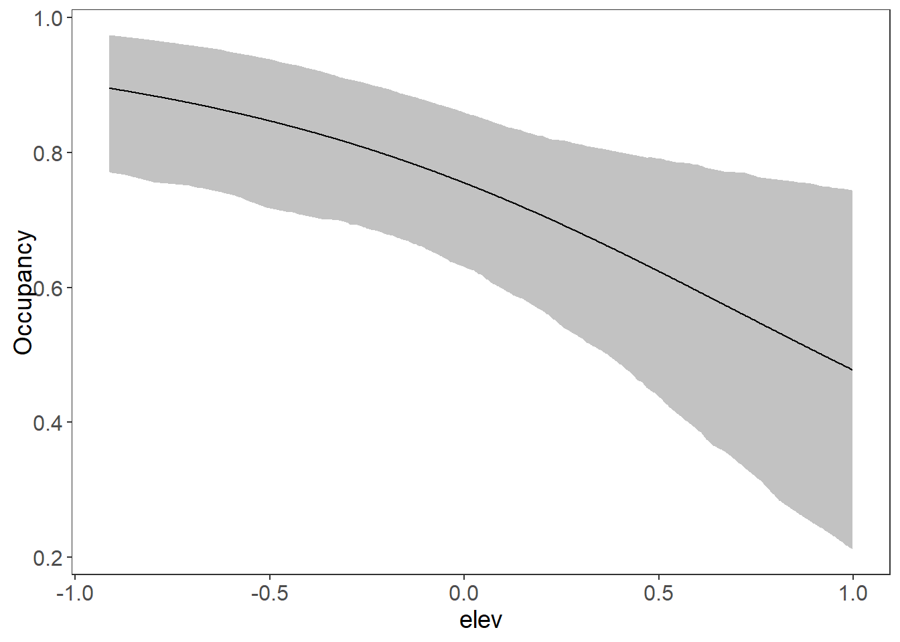

Chapter7 Bayesian analysis
In this part we are going to estimate the same parameters of a model equal to the “best model” which was selected in the unmarked model selection procedure in the previous chapter. Recall that this model has beta1 and alpha1, alpha2, alpha3. The parameters that we will estimate with the Bayesian method are going to be compared with the parameters that we already estimated with ML in unmarked and we will also compare them with the real parameters that we defined when establishing the data (data2) with the function data.fn, to see which of the two estimation methods (ML or Bayesian) are closer to the real parameters.
7.1 Generating the data
Again we will use a TEAM-type design (https://www.wildlifeinsights.org/team-network) with 60 sampling sites and 30 repeated visits, which is equivalent to the 30 days that the cameras remain active in the field. Our species remains the same, the white-tailed deer. For this example we will assume that detection is 0.6, occupancy is 0.8, and the interactions are simple with altitude as the only covariate explaining occupancy. But for detection there is a more complex relationship, assuming there is a slight interaction between the observation covariates. For observation, altitude and temperature interact with each other. Also note how altitude influences in opposite directions with a positive altitude sign for detection and a negative sign for occupancy.
# ### Generate a new data set or use the same
# # ****************************************
# set.seed(148)
# data <- data.fn(show.plot = T) # Default arguments
# str(data) # Look at the object
# we are oing to use the data from datos2 object
### Fit same model with JAGS, using library jagsUI
# ************************************************
# Bundle data
win.data <- list(y = datos2$y,
M = nrow(datos2$y),
J = ncol(datos2$y),
elev = datos2$elev,
forest = datos2$forest,
temp = datos2$temp)
# str(win.data)
# # Specify model in BUGS language
# sink("model22.txt")
# cat("
# model {
#
# # Priors
# mean.p ~ dunif(0, 1) # Detection intercept on prob. scale
# alpha0 <- logit(mean.p) # same on logit scale
# mean.psi ~ dunif(0, 1) # Occupancy intercept on prob. scale
# beta0 <- logit(mean.psi) # same on logit scale
# for(k in 1:3){ # 2 detection covariates + 1 interact
# alpha[k] ~ dnorm(0, 0.01) # Covariates on logit(detection)
# # alpha[k] ~ dnorm(0, 0.05) # Covariates on logit(detection)
# # alpha[k] ~ dunif(-10, 10) # Covariates on logit(detection)
# }
#
# for(k in 1:1){ # 2 occupancy covariates + 1 interact
# beta[k] ~ dnorm(0, 0.01) # Covariates on logit(occupancy)
# # beta[k] ~ dnorm(0, 0.05) # Covariates on logit(occupancy)
# # beta[k] ~ dunif(-10, 10) # Covariates on logit(occupancy)
# }
#
# # Translation of the occupancy parameters in unmarked into those for BUGS:
# # (Intercept) (beta0 in BUGS)
# # elev (beta[1])
# # forest (beta[2])
# # temp (beta[3])
# # elev:forest (beta[4])
# # elev:temp (beta[5])
# # forest:temp (beta[6])
# # elev:forest:temp (beta[7])
#
#
# # Likelihood
# for (i in 1:M) {
# # True state model for the partially observed true state
# z[i] ~ dbern(psi[i]) # True occupancy z at site i
# logit(psi[i]) <- beta0 + # occupancy (psi) intercept
# beta[1] * elev[i] #+ # elev
# #beta[2] * forest[i] #+ # forest
# #beta[3] * elev[i] * forest[i] # elev:forest
# #beta[4] * elev[i] * temp[i] + # elev:temp
# #beta[5] * temp[i] + # temp
# #beta[6] * forest[i] * temp[i] + # forest:temp
# #beta[7] * elev[i] * forest[i] * temp[i] # elev:forest:temp
#
# for (j in 1:J) {
# # Observation model for the actual observations
# y[i,j] ~ dbern(p.eff[i,j]) # Detection-nondetection at i and j
# p.eff[i,j] <- z[i] * p[i,j]
# logit(p[i,j]) <- alpha0 + # detection (p) intercept
# alpha[1] * elev[i] + # effect of elevation on p
# alpha[2] * temp[i,j] + # effect of temp on p
# alpha[3] * elev[i] * temp[i,j] # effect of elev:temp on p
# }
# }
#
# # Derived quantities
# sumZ <- sum(z[]) # Number of occupied sites among those studied
# occ.fs <- sum(z[])/M # proportion of occupied sites among those studied
# logit.psi <- beta0 # For comparison with unmarked
# logit.p <- alpha0 # For comparison with unmarked
# }
# ",fill = TRUE)
# sink()
library(jagsUI)
# library(R2jags)
# Initial values
zst <- apply(datos2$y, 1, max)
inits <- function(){list(z = zst,
mean.psi = runif(1),
mean.p = runif(1),
alpha = rnorm(3), # adjust here
beta = rnorm(1))} # adjust here
# Parameters monitored
params <- c("sumZ", "occ.fs", "logit.psi", "logit.p", "alpha", "beta")
# MCMC settings
# ni <- 100000 ; nt <- 10 ; nb <- 1000 ; nc <- 3
ni <- 10000 ; nt <- 10 ; nb <- 500 ; nc <- 3
# Call JAGS from R (ART 260 sec with norm(), 480 with unif(-10,10))
# and summarize posteriors
system.time(out22 <- jags(win.data,
inits,
parameters.to.save = params,
model.file = "C:/Users/silvi/Documents/GitHub/occu_book/model22.txt",
n.chains = nc,
n.thin = nt,
n.iter = ni,
n.burnin = nb,
parallel = T))##
## Processing function input.......
##
## Done.
##
## Beginning parallel processing using 3 cores. Console output will be suppressed.
##
## Parallel processing completed.
##
## Calculating statistics.......
##
## Done.## user system elapsed
## 0.09 0.07 496.41# See model diagnistics and convergence
library(mcmcplots)
library(ggmcmc)
fit22.mcmc <- as.mcmc.list(out22$samples)
bayes.mod.fit.gg <- ggs(fit22.mcmc) #convert to ggmcmc
ggs_running(bayes.mod.fit.gg)# check if chains approach target distrib. 
# denplot(fit22.mcmc, parms = c("beta",
# "alpha[1]", "alpha[2]", "alpha[3]",
# "logit.psi", "logit.p" ))
# traplot(fit22.mcmc)
# ggs_density(bayes.mod.fit.gg)
# xyplot(out22) # assess within-chain convergence
densityplot(out22) # shape of the posterior distribution
# see model result and estimates
print(out22, 3)## JAGS output for model 'C:/Users/silvi/Documents/GitHub/occu_book/model22.txt', generated by jagsUI.
## Estimates based on 3 chains of 10000 iterations,
## adaptation = 100 iterations (sufficient),
## burn-in = 500 iterations and thin rate = 10,
## yielding 2850 total samples from the joint posterior.
## MCMC ran in parallel for 8.272 minutes at time 2022-06-26 19:52:50.
##
## mean sd 2.5% 50% 97.5% overlap0 f Rhat n.eff
## sumZ 46.024 0.154 46.000 46.000 46.000 FALSE 1.000 1.003 2850
## occ.fs 0.767 0.003 0.767 0.767 0.767 FALSE 1.000 1.003 2850
## logit.psi 1.173 0.324 0.574 1.157 1.858 FALSE 1.000 1.000 2850
## logit.p 0.407 0.072 0.270 0.406 0.556 FALSE 1.000 1.000 2850
## alpha[1] 2.149 0.146 1.861 2.144 2.445 FALSE 1.000 1.000 2850
## alpha[2] 0.905 0.128 0.652 0.904 1.152 FALSE 1.000 1.000 2850
## alpha[3] 1.685 0.247 1.191 1.689 2.168 FALSE 1.000 1.001 2850
## beta -1.475 0.640 -2.750 -1.464 -0.285 FALSE 0.994 1.000 2850
## deviance 1589.314 3.437 1585.532 1588.385 1599.121 FALSE 1.000 1.001 2197
##
## Successful convergence based on Rhat values (all < 1.1).
## Rhat is the potential scale reduction factor (at convergence, Rhat=1).
## For each parameter, n.eff is a crude measure of effective sample size.
##
## overlap0 checks if 0 falls in the parameter's 95% credible interval.
## f is the proportion of the posterior with the same sign as the mean;
## i.e., our confidence that the parameter is positive or negative.
##
## DIC info: (pD = var(deviance)/2)
## pD = 5.9 and DIC = 1595.218
## DIC is an estimate of expected predictive error (lower is better).# store in tmp coefficients from best ML model
tmp <- summary(fm7)##
## Call:
## occu(formula = ~elev + temp + elev:temp ~ elev, data = umf)
##
## Occupancy (logit-scale):
## Estimate SE z P(>|z|)
## (Intercept) 1.18 0.326 3.62 0.000291
## elev -1.41 0.624 -2.26 0.023548
##
## Detection (logit-scale):
## Estimate SE z P(>|z|)
## (Intercept) 0.407 0.0735 5.54 3.03e-08
## elev 2.140 0.1494 14.32 1.66e-46
## temp 0.900 0.1262 7.14 9.68e-13
## elev:temp 1.680 0.2514 6.68 2.34e-11
##
## AIC: 1656.533
## Number of sites: 60
## optim convergence code: 0
## optim iterations: 38
## Bootstrap iterations: 0modestimates <- cbind(rbind(tmp$state[1:2], tmp$det[1:2]),
Post.mean = out22$summary[c(3, 8, 4:7), 1],
Post.sd = out22$summary[c(3, 8, 4:7), 2] )
# fix the(logit-scale) in unmarked
modestimates[1,1]<- plogis(modestimates[1,1])
modestimates[3,1]<- plogis(modestimates[3,1])
# fix the(logit-scale) in Bayes in logit.psi logit.p
modestimates[1,3]<- plogis(modestimates[1,3])
modestimates[3,3]<- plogis(modestimates[3,3])
# get real values from datos2 object
real<- rbind(datos2$mean.occupancy, datos2$beta1, datos2$mean.detection,
datos2$alpha1, datos2$alpha2, datos2$alpha3)7.2 Comparing the actual and estimated values from ML and Bayesian
Let’s see how close the estimates are to the actual values, by comparing the actual value with the Maximum Likelihood estimate (columns 2 and 3) and the Bayesian estimate (columns 4 and 5).
### see if the values are close to real values
compare <- cbind(real, modestimates) # put both in same table
# put names to rows
rownames(compare) <- c("psi","beta","p","alpha1","alpha2", "alpha3")
# print comparing table
library(knitr)
kable(compare)| real | Estimate | SE | Post.mean | Post.sd | |
|---|---|---|---|---|---|
| psi | 0.8 | 0.7653197 | 0.3262574 | 0.7637639 | 0.3241587 |
| beta | -1.5 | -1.4129006 | 0.6239572 | -1.4750154 | 0.6402681 |
| p | 0.6 | 0.6004304 | 0.0735178 | 0.6003755 | 0.0723759 |
| alpha1 | 2.0 | 2.1395071 | 0.1494144 | 2.1486145 | 0.1457261 |
| alpha2 | 1.0 | 0.9003900 | 0.1261927 | 0.9045429 | 0.1280443 |
| alpha3 | 1.5 | 1.6801587 | 0.2513946 | 1.6853946 | 0.2469354 |
7.3 Bayesian estimates easily using ubms
The JAGS code adds another layer of complexity to the analysis. Fortunately, since the year 2022, there is a new package in the neighborhood. The ubms package allows Bayesian estimates using the same easy and simple unmarked structure. The package has a formula-based interface compatible with unmarked, but the model is fit using MCMC with Stan instead of using maximum likelihood.
library(ubms)
(fm7_ubms <- stan_occu(~ elev + temp + elev:temp ~ elev, umf, chains=3, cores=3))##
## Call:
## stan_occu(formula = ~elev + temp + elev:temp ~ elev, data = umf,
## chains = 3, cores = 3)
##
## Occupancy (logit-scale):
## Estimate SD 2.5% 97.5% n_eff Rhat
## (Intercept) 1.16 0.325 0.567 1.812 3548 1.000
## elev -1.27 0.568 -2.447 -0.223 2970 0.999
##
## Detection (logit-scale):
## Estimate SD 2.5% 97.5% n_eff Rhat
## (Intercept) 0.398 0.0742 0.257 0.555 3054 1
## elev 2.117 0.1481 1.825 2.419 2670 1
## temp 0.882 0.1272 0.633 1.134 2931 1
## elev:temp 1.627 0.2514 1.129 2.147 3109 1
##
## LOOIC: 1657.562
## Runtime: 8.968 sec# Assess model goodness-of-fit with a posterior predictive check, using the MacKenzie-Bailey chi-square test:
fm_fit <- gof(fm7_ubms, draws=500)
plot(fm_fit)
# Look at the marginal effect of on detection:
plot_effects(fm7_ubms, "det")
# Look at the marginal effect of on Occupancy:
plot_effects(fm7_ubms, "state")